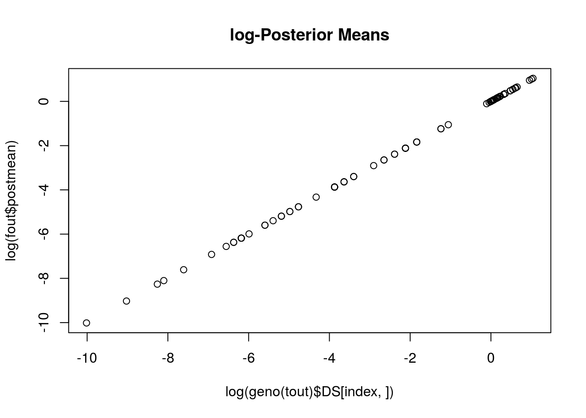

I test out the new vcfdog function in updog.
library(updog)## 'BiocParallel' did not register default BiocParallelParams:
## invalid class "MulticoreParam" object: 1: 'cluster', '.clusterargs', 'RNGseed' must be length 1
## invalid class "MulticoreParam" object: 2: 'timeout', 'log' must be length 1library(VariantAnnotation)## Loading required package: BiocGenerics## Loading required package: parallel##
## Attaching package: 'BiocGenerics'## The following objects are masked from 'package:parallel':
##
## clusterApply, clusterApplyLB, clusterCall, clusterEvalQ,
## clusterExport, clusterMap, parApply, parCapply, parLapply,
## parLapplyLB, parRapply, parSapply, parSapplyLB## The following objects are masked from 'package:stats':
##
## IQR, mad, xtabs## The following objects are masked from 'package:base':
##
## anyDuplicated, append, as.data.frame, cbind, colnames,
## do.call, duplicated, eval, evalq, Filter, Find, get, grep,
## grepl, intersect, is.unsorted, lapply, lengths, Map, mapply,
## match, mget, order, paste, pmax, pmax.int, pmin, pmin.int,
## Position, rank, rbind, Reduce, rownames, sapply, setdiff,
## sort, table, tapply, union, unique, unsplit## Loading required package: GenomeInfoDb## Loading required package: stats4## Loading required package: S4Vectors## Loading required package: IRanges## Loading required package: GenomicRanges## Loading required package: SummarizedExperiment## Loading required package: Biobase## Welcome to Bioconductor
##
## Vignettes contain introductory material; view with
## 'browseVignettes()'. To cite Bioconductor, see
## 'citation("Biobase")', and for packages 'citation("pkgname")'.## Loading required package: Rsamtools## Loading required package: XVector## Loading required package: Biostrings##
## Attaching package: 'VariantAnnotation'## The following object is masked from 'package:base':
##
## tabulateinput <- "../data/uit_small/uit.vcf"
output <- "../data/uit_small/uit_fit.vcf"
vcfdog(input = input,
output = output,
ploidy = 4,
nc = 2)
tout <- readVcf(file = output, genome = "updog")
meta(header(tout))$META## DataFrame with 4 rows and 1 column
## Value
## <character>
## fileformat VCFv4.2
## fileDate 20180515
## source 0.99.0
## commandline vcfdog(input = input, output = output, ploidy = 4, nc = 2)info(tout)$BIAS## [1] 0.7105 1.0694 0.6497 0.9190 1.8682 1.6160 0.4412 1.2571 1.4577 1.0878info(tout)$SEQ## [1] 0.003511 0.004735 0.003001 0.002104 0.003414 0.011617 0.004337
## [8] 0.003454 0.002170 0.002261info(tout)$OD## [1] 0.328796 0.000001 0.556388 0.023108 0.000001 0.000001 0.091614
## [8] 0.120773 0.015448 0.081995info(tout)$PM## [1] 0.0912853 0.2132191 0.0008733 0.1151513 0.2462069 0.2423543 0.0384163
## [8] 0.3560364 0.2332847 0.0366830info(tout)$PRIOR## NumericList of length 10
## [["1"]] 1.1 6.9 16.4 29.8 47
## [["2"]] 6.4 5 5.7 8.5 13.5
## [["3"]] 0.0038 30.5885 81.5631 152.9275 244.6818
## [["4"]] 2.5 5.2 9.7 16.1 24.3
## [["5"]] 8.2 5.4 5.1 7.2 11.8
## [["6"]] 8.3 5.5 5.1 7.1 11.7
## [["7"]] 0.64 8.81 22.43 41.49 66.01
## [["8"]] 5.1 5.5 6.8 8.9 11.8
## [["9"]] 19.6 9.8 4.6 4.1 8.2
## [["10"]] 1.8 4.8 28.7 73.4 138.9dim(geno(tout)$GT)## [1] 10 84dim(geno(tout)$GQ)## [1] 10 84dim(geno(tout)$DS)## [1] 10 84dim(geno(tout)$GP)## [1] 10 84 5Compare to just a regular flexdog fit.
index <- 4
uit <- readVcf(file = input, genome = "updog")
altvec <- geno(uit)$AA[index, ]
sizevec <- geno(uit)$DP[index, ]
ploidy <- 4
fout <- flexdog(refvec = altvec, sizevec = sizevec, ploidy = ploidy)## Fit: 1 of 5
## Initial Bias: 0.3679
## Log-Likelihood: -132.7
## Keeping new fit.
##
## Fit: 2 of 5
## Initial Bias: 0.6065
## Log-Likelihood: -132.7
## Keeping old fit.
##
## Fit: 3 of 5
## Initial Bias: 1
## Log-Likelihood: -132.7
## Keeping old fit.
##
## Fit: 4 of 5
## Initial Bias: 1.649
## Log-Likelihood: -132.7
## Keeping old fit.
##
## Fit: 5 of 5
## Initial Bias: 2.718
## Log-Likelihood: -132.7
## Keeping new fit.
##
## Done!fout$bias## [1] 0.919info(tout)$BIAS[index]## [1] 0.919fout$seq## [1] 0.002104info(tout)$SEQ[index]## [1] 0.002104fout$od## [1] 0.02311info(tout)$OD[index]## [1] 0.02311plot(log(geno(tout)$DS[index, ]),
log(fout$postmean),
main = "log-Posterior Means")
This R Markdown site was created with workflowr